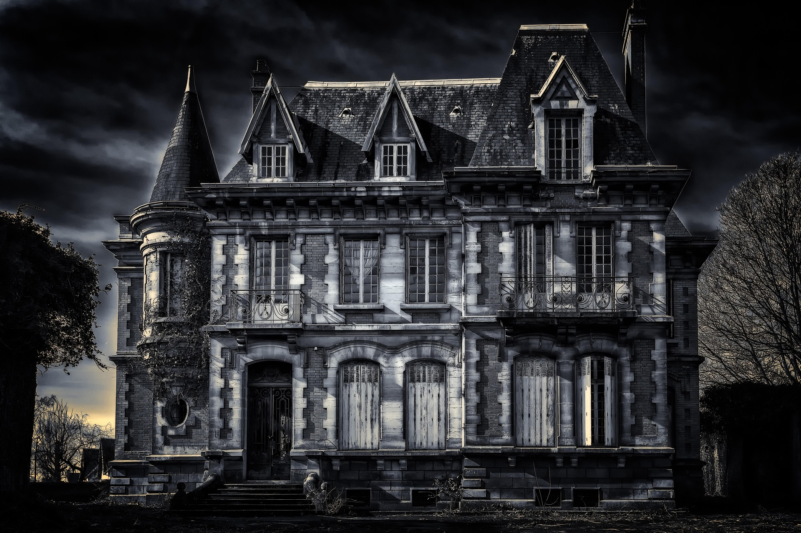

The Golden Era of Gaming
I am a huge fan of the consoles that defined the industry: the GameCube, PS1, PS2, and original Xbox. These systems represent the peak of gaming for me, offering a unique blend of hardware charm and legendary game libraries.
The Powerhouse: Original Xbox
Image from Pixabay.
Why I Play: Puzzles, Strategy, and Horror
My love for gaming goes beyond just high scores; I enjoy games that challenge my mind and keep me on the edge of my seat.
- Survival Horror: I love the Resident Evil series because of the atmospheric dread. The tension of having limited resources while exploring a nightmare is a unique thrill.
- Puzzles: Solving complex environmental puzzles provides a sense of accomplishment that simple action games can't match.
- Strategy: I enjoy the tactical side of gaming—planning my next move and managing my inventory to survive the next encounter.
Enter the Survival Horror

Whether it is the fixed camera angles of the classic titles or the immersive remakes, Resident Evil remains my favorite series because it combines all three elements: horror, puzzles, and strategy.
Image from Pixabay.